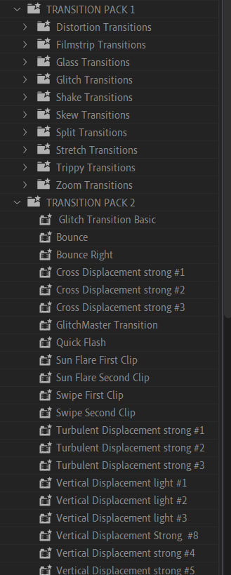

Za scénou jsou pečlivé technické prvky, které přispívají k atmosféře a hloubce videa. Každý záběr prošel stabilizací, která byla doplněna použitím warm a cold filtrů pro zvýšení vizuální kvality. Další zpracování barev bylo použito k zajištění účinného zobrazení nuancí detailů, jako je krev na sněhu.


Také v titulcích byly použity dvě fotografie, které byly zpracovány v Adobe Photoshopu. Byly změněny pomocí filtrů Camera Raw, bylo změněno mnoho parametrů (kontrast, expozice, světlé oblasti, barvy, detaily, ostrost, šum atd.).


Senzorický zážitek je zesílen zapojením zvuků sněhu a hudby. Hudba hraje nepřerušovaně a plynule doplňuje vizuální příběh, zatímco zvuk sněhu se postupně ztiší ve scénách bez ulice, což zvyšuje vtahující kvalitu videa. Pro přechody mezi snímky a pro zlepšení atmosféry videa byly také použity různé efekty (záblesky ,glitch přechody, skleněné přechody atd.)


by Nikita Provorkin and Eleanora Virych